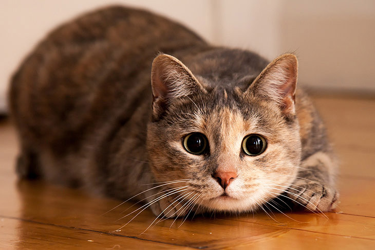

Кошка — млекопитающее семейства кошачьих o четырёх лапах, с одним хвостом и множеством усов. Имеет шерсть и хвост, окрас которых может быть разным. Извращённые селекционерские идеи людишек породили и разновидности без шерсти и/или хвостов, которые по странному недоразумению тоже считаются котами и кошками.
